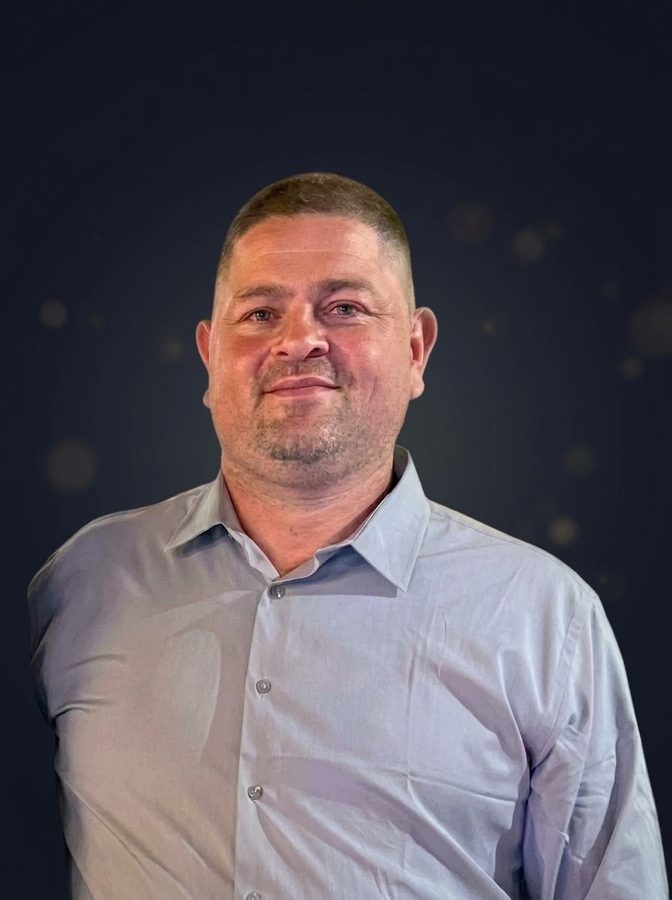

"Quem tem amigo tem tudo! — Minha missão é conectar pessoas."
Conhecido por todos como Piticalyn, é produtor de eventos culturais e líder comunitário com mais de 15 anos de atuação na Zona Oeste do Rio de Janeiro. Filho da cultura suburbana carioca, construiu sua trajetória profissional através do compromisso com a valorização das tradições locais, da organização de eventos de alto impacto e, sobretudo, da arte de conectar pessoas.
Membro da Turma Nova Geração, grupo de bate-bola com 26 anos de história em Campo Grande, integra planejamento estratégico, produção executiva e comunicação — transformando cada iniciativa em um veículo de pertencimento, representatividade e desenvolvimento social. É também integrante do Instituto Campograndense de Cultura (ICC), onde ocupa a cadeira de número 21.
Carnaval, festas comunitárias, ações culturais e sociais.
Sua maior habilidade: unir gente, comunidades e propósitos.
Referência na Zona Oeste, presidente da Nova Geração.
Cadeira 21 no ICC, ponte entre cultura popular e instituições.
Produção executiva da maior saída do grupo em 26 anos, com mais de 200 participantes e cobertura de imprensa.
12 de outubro, Rua Argoim: brinquedos infláveis, pula-pula, Guaracamp e sorteio de brinquedos.
Evento de exposição da fantasia da Nova Geração, com apresentação do grupo Nosso Quintal.
+50 eventos em mais de uma década, com parcerias de buffets, decoradores e espaços da região.
Murais, exposições fotográficas, rodas de samba e preservação da memória cultural de Campo Grande.
Relacionamento ativo com o ICC e entidades da Zona Oeste, captando apoios e parcerias.
Piticalyn acredita que o maior ativo de qualquer pessoa não são bens materiais, mas sim as conexões humanas que constrói ao longo da vida. Sua trajetória é marcada pela capacidade de unir pessoas de diferentes mundos ao redor de um propósito comum — seja no carnaval, nas ações comunitárias ou nos espaços institucionais.
A amizade é o fundamento de tudo que Piticalyn constrói e realiza — no carnaval, na cultura e na vida.
Por trás do produtor cultural e da liderança na Nova Geração existe uma pessoa real, com família e uma vida além do carnaval. Este espaço é dedicado a esse lado — os momentos em casa, as pessoas mais próximas e as histórias que não aparecem nos eventos oficiais.
Em breve, fotos e histórias de família entram aqui. Este espaço existe de propósito — para lembrar que a cultura que Piticalyn constrói começa em casa.